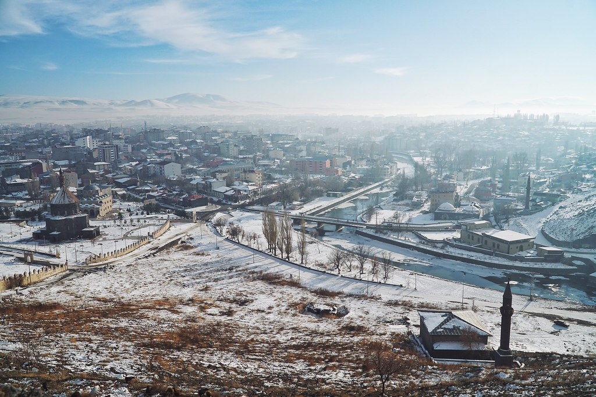

WHAT IS NOT WHAT?
The year in which the heater is used as a refrigerator for 8 months Kars, Turkey is located on the border with Armenia. The city is also the third highest city in the country. There are a few theories about the origin of the name Kars. Karuts Berd, which means the Armenian upper castle, Kariskalaki, which means Georgian door, or some of these theories which came from the Karsuz which are Oghuz tribes who migrated to the region in time.
Kars is home to different civilizations such as Urartu, Persia, Armenian, Byzantine, Seljuk, Georgian, Mongolian, Ottoman, Russian throughout history and is one of the important cities on the Silk Road. These different civilizations that have passed through the city have provided an important ethnic wealth to our day. Different ethnicities such as Turk, Circassian, Kurdish, Azeri, and Malakan lived together in Kars for years. In fact, there is even a village close to the center of Kars, where only Malakans live. However, due to the population of Malakan who migrated from Kars, this village (Karacaören) is in danger of extinction.
This multicultural structure has provided many benefits to the social structure of the city. For example, Malakan settled in the city thanks to the Russians, migrants migrated goose breeding, ovine livestock breeding, gravity and cheddar cheese production to the city. Kars, with a population of 75,000, is also home to the Kafkas University, which has 20,000 students. Therefore, it can be said that the city is partly a student city.
Kars people are hospitable people. Due to the difficult winter conditions they have a very serene structure. They call their city a little derelict. They state that the state neglected Kars after the 80s. In the 70s, social life in Kars, where open air balloons, skating rinks and a lively social life, is waxing the old. The great immigration to the west of the country is also an important problem for the city. On the other hand, animal husbandry, which is the main source of livelihood of the region, is losing power rapidly in recent years due to the excessive cost of feed. The Baku-Tbilisi-Kars Railway Line, which has been completed, is seen as an important investment that will activate the commercial and social life of the city. Karslılar hope that the railway line can help the city get rid of its dead land while increasing its relations with the surrounding countries. In Kars, which has a significant number of coffee due to unfavorable weather conditions during the winter, formerly lovers have thrown away. Today, however, this tradition can not be said to continue much. Despite the great lovers such as Murat Çobanoğlu and Şeref Taşlıova from Kars, this tradition has succumbed to the modern day entertainment concept.
Kars, which was under Russian occupation for 40 years since 1878, has many beautiful examples of Baltic Architecture. Although some of these magnificent buildings used by the military and government agencies in the city are under protection, some of them are owned or unregistered. Unfortunately, it is difficult to say that Karslılar these great buildings can give the right. In contrast to many Anatolian cities, there is a crenellate system on the streets of Kars. It was built in 1890 by Dutch town planners, who were invited by Russians to the city. The most important reason why the Russians invest so much in Kars during the occupation is to remain in Kars and become a strong border city.
TRAVELING & SEEING
You can start the tour from the castle. The castle, built on the hillside of a hill overlooking the city, was built in time of the Seljuks. You can visit the Church of the 12 Apostles, which was built as a rival to the Akdamar Church in Van. The building, which is an old Armenian church, is now used as a mosque. Great stone work used in the walls must be seen. Next to it, you can visit Evliya Mosque which was built during the Ottoman period. You can also visit the Harakani Tomb in the garden of the mosque. The tomb of Harakani, one of the important figures in the history of Sufism and mentioned in the Masnavi of Mawlana, was discovered by Evliya Celebi and was buried in its present place. You can also visit the nearby Stone Bridge.
After wandering around some interesting streets in the Kaleiçi neighborhood, you can have a bit of tea in Çobanoğlu Kahvesi. The name of the famous lovers Murat Cobanoglu's coffee preserves its original structure. After resting, you can wander the streets between Kaleiçi Quarter and the most lively street of the city, Faik Bey Street. On these streets you can see the Baltic architecture buildings built during the Russian invasion. The most spectacular of these buildings are the Security Directorate and the Revenue Office buildings.
After wandering around the city center, you can visit the Fethiye Mosque on Cumhuriyet Street. One of the most magnificent buildings from the Russian occupation period, the Fethiye Mosque was originally built as a large Orthodox Cathedral. But later it was converted into a mosque. The majestic onion domes were removed by a visionless ruler. The Kars Museum, which you can reach in a short walk, is a neat little museum that summarizes the history of the city. The museum, where both archaeological finds are exhibited and the traditional crafts of Kars, can be visited in a short time. Sarikamish which is the city's most famous district of Turkey's most important ski centers. The crystal snow in the world, the Swiss Alps and Sarıkamış, is ideal for skiing and snowboarding.
A large animal market is established in Kars every weekday until 10-11. Located at the exit of the city, this market is known as the biggest cattle market in the region. If you are lucky in the market where cattle are the main livelihoods of the region and are waiting for their buyers, then you can coincide with tight bargains.
Ani Ruins, which are about 40 minutes away from Kars, are one of the historical areas to be seen in the city. The city, which was founded by the Armenian Kingdom and has a long history, has been a crossing point for many travelers and merchants such as Marko Polo during the period when the Silk Road was actively used. Eastern Roman, Seljuk, Georgians and many civilizations, respectively, the city population entering the rule of 150 thousand people in the most splendid times in the 16th century began to be abandoned gradually.

The majestic north walls, the paintings in the wall paintings are still alive, the Church of the Virgin Mary, the first Turkish mosque in Anatolia and the Holy Virgin, which are sacred to the Armenians, must be seen in the historical city. On the other hand Ani ruins in a valley slope is actually taking place in Armenia's border with Turkey. Therefore, when you visit the Ani Ruins, you have the chance to see the lands of Armenia on the other side of the valley.
Çıldır Lake, which is approximately 1.5 hours away from Kars, is another place to see. Cildir is an ordinary lake in the summer, and in the winter it is completely icy and can be circulated on the sledges. Since it is covered with a very thick layer of ice, there is no danger of breaking. Walking on a frozen lake and walking away from the beach is a very interesting feeling.
When you visit Çıldır Lake, you may come across the fishers who are fishing in the lake. Fishing with the network on the frozen lake is quite a laborious task. First of all, the location of the nets, which have been thrown from the lake without freezing, should be followed by the breaking of 45-50 centimeter ice at least in 2 places and the net must be withdrawn. The broken parts are in their own state within 4-5 hours. After a short drive up to Cildir and a half-hour walk, you can visit the Devil's Fortress, which is a very different theory about the construction of the film. Especially in the snowy period instead of reaching the castle will be safer to watch from a distance.
EATING AND DRINKING
Due to the large cattle breeding in Kars milk and milk products are very successful. Malachan and German migrants added to the urban culture, as well as cheddar cheese and gruyere cheese, are also important products of the region. This is reflected in other flavors. The yellow oil obtained by cream, butter and butter, especially the butter boiled on high heat and frozen on it, is quite good. The most accurate address for a traditional and natural Kars breakfast is the Kars Kaz House, owned by Nuran Teyze. At the same time, you can taste the famous geese of Kars. Goose meat with a little salt and a heavy meat is divided into pieces and served as a whole. Other local dishes can be found at Kars Kaz Evi. The nettle-marital vaccine of them is gorgeous. Do not forget to leave room for Kars Helva to suppress dishes. Another successful restaurant in town is Honeysuckle. Here, especially the hıngel, revan kofte and the bagel are scrumptious.
Lake Çıldır is famous for hunting Yellow Carp. The yellow carp caught in the minus air temperatures are quite delicious fish. Israel carp, thrown into the lake in a period of yellow carp eggs fed as a result of a very reduced fish species under protection. For eating yellow carp, Atalay's Place, located on the lake shore, is the best choice. If you're lucky, you can join the hunt for fishermen. Great Zavots can be tried to exchange cheese in the city.
ACCOMMODATION
Every quality hotel in Kars is located. However, with its central location and price, Kars Teacher Center is a very clever option. Another economic alternative is the Konak Hotel.